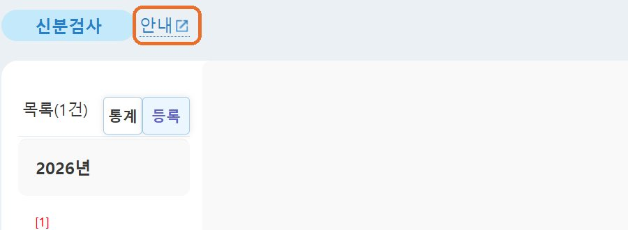
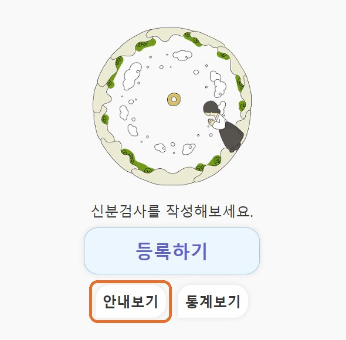
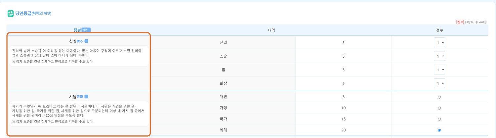
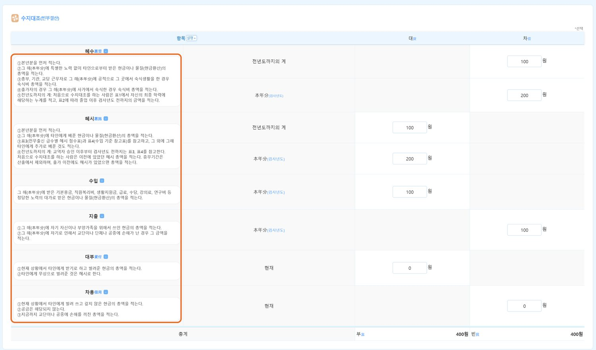

요지. 온라인 신분검사 페이지가 세 가지 달라집니다. 작성하시기 전에 한번 살펴봐 주시기 바랍니다.
- 안내 링크 추가: 작성 화면에서 신분검사 안내 페이지로 바로 갈 수 있습니다.
- 종별 해설 추가: 당연등급·부당등급의 각 종별 아래에 해설이 붙었습니다.
- 수지대조·자기평가 신설: 그동안 없던 수지대조(빈부결산)와 자기평가를 온라인으로 작성합니다. 수지대조에는 항목별 해설이 붙었습니다.
12월 2일(수) 오픈 예정지금은 시범 페이지에서 화면과 문구를 조정하고 있습니다. 아래 화면은 시범 페이지 기준이라 오픈 때 일부 달라질 수 있습니다.
1. 안내 페이지 링크
작성하다가 방법이 궁금할 때 바로 열어 보세요
신분검사 작성 화면 안에서 신분검사 안내 페이지로 바로 이동할 수 있게 되었습니다. 링크는 두 곳에 있습니다.
화면 왼쪽 위「신분검사」 옆 ‘안내’
화면 가운데「등록하기」 버튼 아래 ‘안내보기’


2. 당연등급·부당등급 종별 해설
점수를 매기기 전에 기준을 먼저 확인하세요
당연등급(복락의 씨앗)과 부당등급의 각 종별(신심·서원·공심·겸양 등) 아래에 그 뜻을 풀이한 해설이 함께 나옵니다. 해설을 읽고 나서 점수를 매기면 각 종별을 어떤 기준으로 살펴야 하는지 바로 확인할 수 있습니다.

- 표 머리의 「설명」 버튼과 각 종별 옆의 작은 버튼으로 해설을 펼치거나 접을 수 있습니다.
- 일부 종별에는 「※ 장차 보충할 것을 전제하고 만점으로 기록할 수도 있다」 같은 기록 안내도 함께 적혀 있습니다.
3. 수지대조·자기평가 신설
이제 온라인에서 함께 작성합니다
그동안 온라인 신분검사 페이지에 없던 수지대조(빈부결산)와 자기평가가 새로 들어왔습니다. 여섯 항목마다 무엇을 적어야 하는지 해설이 붙어 있어, 처음 작성하는 분도 해설을 따라 적을 수 있습니다.

항목과 적는 칸
금액은 항목에 따라 대(貸) 칸 또는 차(借) 칸에 적습니다.
| 항목 | 칸 | 시점 | 무엇을 적나요 |
|---|---|---|---|
| 혜수(惠受) | 차 | 전년도까지의 계 · 本年分 | 특별한 노력 없이 남에게서 받은 현금·물질, 공적 숙식비 등 |
| 혜시(惠施) | 대 | 전년도까지의 계 · 本年分 | 남에게 베푼 현금·물질 |
| 수입 | 대 | 本年分 | 기본용금·급료·수당 등 정당한 노력의 대가 |
| 지출 | 차 | 本年分 | 자신과 부양가족을 위해 쓴 현금, 자기로 인해 공중에 난 손해 |
| 대부(貸付) | 대 | 현재 | 받기로 하고 남에게 빌려준 현금 |
| 차용(借用) | 차 | 현재 | 빌려 쓰고 갚지 않은 현금, 교단·공중에 끼친 손해 |
한눈에 보시도록 줄여 적은 것입니다. 자세한 기준은 화면의 항목별 해설을 따라 주세요.
총계는 자동으로 합산됩니다
금액을 넣으면 맨 아래 총계에 대(貸) 칸 합계는 부(富), 차(借) 칸 합계는 빈(貧)으로 표시됩니다. 수지대조는 선택 항목입니다.
자기평가
당연등급·부당등급·수지대조를 마친 뒤, 결과를 종합하여 자기 인격의 허와 실을 점검하고 다음 해의 공부 계획을 간략하게 적는 자기평가도 온라인에서 함께 작성할 수 있습니다.
이어서 보기원기111년 신분검사 안내당연등급 · 부당등급 · 수지대조 · 12월 단회 진행 요령